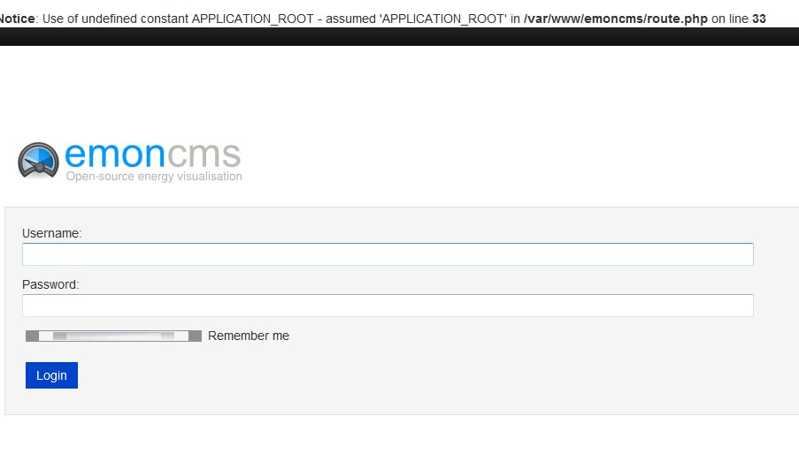

I've downloaded the emoncms image file, installed it and got everything working fine, until I ran;
$ git pull origin master
from the emoncms folder.
After a reboot, I get the error below, and not able to log in.
Notice: Use of undefined constant APPLICATION_ROOT - assumed 'APPLICATION_ROOT' in /var/www/emoncms/route.php on line 33
I could not resolve it, so I downloaded a fresh image, and the same happened when I tried to update via git. Is there a problem?

Re: RESOLVED - Problem with recent Git commits?
Is there any update on this please?
I've just repeated the process with a different SD card.
- Downloaded most recent image to a 8Gb SD card
- Run raspi-config to expand root & change password
- Log into emoncms using raspi/raspberry & change username/password
Everything at this stage working fine, can log in & out, see inputs & feeds, database OK, Pi module running OK.
- run $ git pull origin master from emoncms folder, and successfully download latest updates, no error messages from Git or problems whatsoever.
Now if I try to log in, I get the error shown above (the login box fields are thinner too) and I cannot log in.
No other code or actions have been done, and I have cleared my browser cache (several times!!)
I notice that the route.php module was updated just 2 days ago.
Paul
Re: RESOLVED - Problem with recent Git commits?
APPLICATION_ROOT is defined in default.settings.php (again updated a few days ago - same time as route.php) and which is renamed to settings.php during initial site installation.
Therefore the code which defines APPLICATION_ROOT is of course never added to settings.php during a subsequent git pull.
The line below can be manually added to settings.php by;
$ sudo nano /var/www/emoncms/settings.php
and paste the code;
//The sites application root if run in a sub directory e.g. domain.com/emoncms
define('APPLICATION_ROOT', str_replace($_SERVER['DOCUMENT_ROOT'], '', realpath(dirname(__FILE__))));
just above;
// Default controller and action if none are specified and user is anonymous
Save the settings.php and reboot.
Re: RESOLVED - Problem with recent Git commits?
No need to reboot, just reload the page